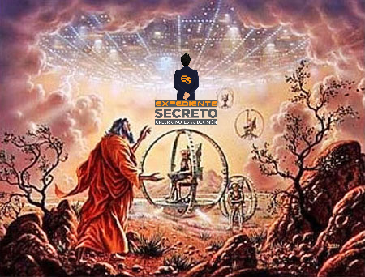
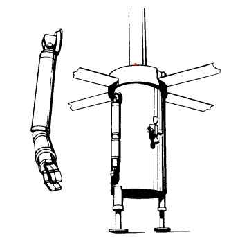

Hay lectores por ahí que estarían sorprendidos u ofendidos con la idea de que tecnología avanzada fue descrita en la Biblia. Hay otros lectores que se han dado cuenta que las únicas explicaciones a 'misterios bíblicos' son antiguos Encuentros Cercanos.
El más asombroso ejemplo de un Encuentro cercano en el Antiguo Testamento es el Libro de Ezequiel.
Lea el principio del capítulo 1 en la Biblia Reina Valera... Sólo imagine que se trata de un aterrizaje OVNI. Con esta idea en mente, la experiencia de Ezequiel es casi comprensible. El Libro de Ezequiel fue tan controversial que casi no sobrevivió a los editores religiosos que dejaron de lado el Libro de Enoch.
Las referencias en algunas sagradas escrituras a máquinas extrañas han provocado, a lo largo de la historia, especulaciones y conjeturas para dar explicaciones aceptables, si no racionales, del fenómeno relatado.
Se han utilizado conocimientos técnicos modernos y procedimientos de prueba para reconstruir un modelo de lo que vio y experimentó uno de los cuatro grandes profetas judíos hace dos milenios y medio.
Cualquier idea de visitas a nuestro planeta por parte de seres extraterrestres se detiene inmediatamente al darse cuenta de que el conocimiento científico existente excluye esa posibilidad.
Sus apariciones iban frecuentemente acompañadas de fuego, humo y ruidos atronadores; su influencia sobre el hombre fue, en su mayor parte, beneficiosa. Si la fuente de esta información son los "pueblos primitivos", la llamamos fábula; si el origen está en las escrituras religiosas de las civilizaciones más desarrolladas, interpretamos los cuentos de una manera más espiritual o incluso santa.
Ezequiel 1:4
Miré y vi un vendaval que venía del norte, una nube inmensa con relámpagos y rodeada de luz brillante. El centro del fuego parecía metal incandescente.
La nave espacial comienza a cierta distancia del profeta en su descenso inicial. La nube de vapor se produce desde el enfriamiento preliminar hasta el encendido del motor del cohete. Luego se enciende el motor del cohete.
Ezequiel 1:5
y en el fuego había algo que parecían cuatro seres vivientes. En apariencia su forma era la de un hombre.
Mirando hacia arriba, el profeta ve cuatro formas rodeadas de fuego y vapor que parecen vivas. Se trata de cuerpos parecidos a helicópteros desplegados antes del aterrizaje.
Ezequiel 1:6
pero cada uno de ellos tenía cuatro caras y cuatro alas.
El profeta ahora puede ver más detalles porque la nave está a baja altura. Ve las cuatro patas de los rotores y las carcasas del carenado encima de los rotores que dan la apariencia de caras.
Ezequiel 1:7
Sus piernas estaban rectas; sus pies eran como los de un becerro y brillaban como bronce bruñido.
Esta es una descripción de las patas de aterrizaje. Las piernas tienen amortiguadores y almohadillas redondas.
Ezequiel 1:8
Debajo de sus alas, en sus cuatro lados, tenían manos de hombre. Los cuatro tenían caras y alas.
Se trata de brazos mecánicos controlados a distancia que cuelgan a lo largo de los cuerpos cilíndricos del helicóptero.
Ezequiel 1:9
Y sus alas se tocaron una con otra. Cada uno siguió recto; no se giraban mientras se movían.
Se hace una referencia a las palas del helicóptero que sobresalen hacia afuera.
Ezequiel 1:10
Sus caras eran así: Cada uno de los cuatro tenía cara de hombre, y a la derecha de cada uno tenía cara de león, y a la izquierda cara de buey; cada uno también tenía cara de águila.
Las superficies del carenado, que protegen los engranajes y otros dispositivos de control encima de los rotores, parecen caras de profeta. Los carenados tienen una forma irregular, con algunas áreas elevadas y otras recortadas, todo lo cual se presta a una interpretación asombrada por parte del profeta. Blumrich muestra, a modo de ejemplo, fotografías de las cápsulas Gemini y Apollo, que desde ciertos ángulos parecen monstruos. Debido a que caras similares miran en direcciones iguales, vemos que los rotores están sincronizados en la posición de reposo.
Ezequiel 1:11
Así eran sus rostros. Sus alas estaban extendidas hacia arriba; cada uno tenía dos alas, una tocaba el ala de otra criatura a cada lado y dos alas cubrían su cuerpo.
La primera parte se refiere a la división de las palas del rotor. La sugerencia es que existe una especie de brecha en el mecanismo de control o carenado. La última parte del verso se refiere a las palas del rotor plegadas en posición hacia arriba y hacia abajo.
Ezequiel 1:12
Cada uno iba derecho. Dondequiera que fuera el espíritu, ellos irían, sin volverse mientras caminaban.
Esto se refiere al conjunto de patas de aterrizaje y las ruedas retráctiles como parte de cada conjunto de patas. Ezequiel no ve las ruedas hasta que realmente se despliegan en el versículo quince. Los versículos nueve, doce y quince están interrelacionados.
Ezequiel 1:13
El aspecto de los seres vivientes era como brasas de fuego o como antorchas. El fuego iba y venía entre las criaturas; Era brillante y de él salían relámpagos.
Ezekiel se refiere al radiador del reactor que fluye y a las ráfagas de los cohetes de control. El efecto del rayo proviene de lo que parecería ser un disparo aleatorio, pero en realidad son ráfagas controladas de varios cohetes de control con fines de estabilización.
Ezequiel 1:14
Las criaturas iban y venían como relámpagos.
La nave espacial flota y se mueve en varias direcciones hasta encontrar un lugar de aterrizaje adecuado.
Ezequiel 1:15
Mientras miraba a los seres vivientes, vi una rueda en el suelo junto a cada ser viviente con sus cuatro caras.
Las ruedas están desplegadas. Aparecen en el mismo momento en que se vuelven necesarios.
Ezequiel 1:16-21
Este era el aspecto y la estructura de las ruedas: brillaban como crisólito, y las cuatro eran iguales. Cada uno parecía estar hecho como una rueda que se cruza con otra rueda. A medida que se movían, iban en cualquiera de las cuatro direcciones a las que se enfrentaban las criaturas; las ruedas no giraban mientras avanzaban las criaturas. Sus llantas eran altas e impresionantes, y las cuatro llantas estaban llenas de ojos por todos lados. Cuando los seres vivientes se movían, las ruedas que estaban junto a ellos se movían; y cuando los seres vivientes se levantaron del suelo, también se levantaron las ruedas. A dondequiera que iba el espíritu, ellos iban, y las ruedas se elevaban con ellos, porque el espíritu de los seres vivientes estaba en las ruedas. Cuando las criaturas se movían, también se movían; cuando las criaturas se detuvieron, ellas también se detuvieron; y cuando los seres vivientes se levantaron de la tierra, las ruedas se levantaron con ellos, porque el espíritu de los seres vivientes estaba en las ruedas.
El color verdoso azulado de las ruedas sugiere una película o revestimiento protector. Se proporciona una descripción adicional de las ruedas reversibles avanzadas. Ezequiel está confundido; le parece una rueda dentro de otra rueda. Estas ruedas parecen obedecer órdenes. Tiene experiencia con ruedas, pero le resultan desconcertantes. Por eso dedica mucho tiempo a su descripción. La nave rueda por el suelo, probablemente en una maniobra para encontrar el sitio más adecuado.
Ezequiel 1:22
Sobre las cabezas de los seres vivientes se extendía algo que parecía una extensión, resplandeciente como hielo y aterradora.
Aquí hay una descripción del cuerpo principal de la nave. Obtenemos su forma básica, extendiéndose como un "firmamento". La superficie del cuerpo principal es metálica, brillante, luminosa.
Ezequiel 1:23
Debajo de la expansión sus alas estaban extendidas una hacia la otra, y cada uno tenía dos alas que cubrían su cuerpo.
Se nos proporciona información adicional sobre la posición de los apéndices parecidos a helicópteros en relación con el cuerpo principal. Las palas del rotor están en reposo.
Ezequiel 1:24-25
Cuando las criaturas se movían, oía el ruido de sus alas, como rugido de aguas que corren, como voz del Todopoderoso, como tumulto de un ejército. Cuando se detuvieron, bajaron las alas. Entonces se escuchó una voz desde arriba de la extensión sobre sus cabezas mientras permanecían con las alas bajas.
Blumrich siente que estos versos están fuera de orden. Describen el funcionamiento de motores de palas de rotor y los efectos sonoros resultantes.
Ezequiel 1:26
Sobre la expansión sobre sus cabezas había algo que parecía un trono de zafiro, y en lo alto, sobre el trono, había una figura parecida a la de un hombre.
El profeta ve el módulo de mando con la forma y el color de un zafiro tallado en cabujón. Sentado en el asiento del piloto hay un hombre.

Ezequiel 1:27
Vi que desde lo que parecía ser su cintura para arriba parecía metal resplandeciente, como lleno de fuego, y que de allí para abajo parecía fuego; y una luz brillante lo rodeó.
El profeta describe los efectos luminosos provocados por las superficies reflectantes de determinados materiales aislantes utilizados en el módulo lunar Apolo. (Ver Apocalipsis 1:12-15 y Daniel 10:6) Podría ser esclarecedor mencionar aquí los efectos de luz, especialmente el efecto de brillo dorado, descrito por algunos testigos actuales de encuentros cercanos con ovnis, personas que han estado en proximidad cercana. a los miembros de la tripulación OVNI. Un ejemplo clásico de tal efecto sería el incidente de Fátima a principios de siglo.
Ezequiel 1:28
Como la apariencia de un arco iris en las nubes en un día lluvioso, así era el resplandor a su alrededor. Ésta era la apariencia de la semejanza de la gloria de Jehová. Cuando lo vi, caí de bruces y oí la voz de uno que hablaba.
Aquí están los efectos de luz óptica del módulo de comando translúcido en forma de cabachon ubicado encima del cuerpo principal de la nave espacial. La luz del sol que incide sobre la superficie translúcida y se refleja en otras superficies dentro del módulo provoca un efecto de luz de arco iris. (Ver Enoc 14:9-22 y Apocalipsis 4:3) Blumrich enfatiza que el brillo "lo rodeaba". No emanó de "él". Debemos notar cuidadosamente que él se refiere al error inicial de identidad de Ezequiel: confundir la nave espacial con Dios mismo.
Entonces, ¿fue realmente el relato de Ezequiel su forma de contar una historia detallada sobre un encuentro con extraterrestres?
Pregunta interesante pero controvertida!
Te dejaré decidir por ti mismo, pero seguro que no he escuchado ninguna otra explicación de las experiencias de Ezekiel que me parezca tan realista.
Éxodo 13:21 en la Reina-Valera 1960 dice: "Y Jehová iba delante de ellos de día en una columna de nube para guiarlos por el camino, y de noche en una columna de fuego para alumbrarles".
Éxodo 24:16 Y la gloria de Jehová reposó sobre el monte Sinaí, y la nube lo cubrió por seis días; y al séptimo día llamó a Moisés de en medio de la nube.
Isaías 19:1 Profecía sobre Egipto. He aquí que Jehová monta sobre una ligera nube, y entrará en Egipto; y los ídolos de Egipto temblarán delante de él, y desfallecerá el corazón de los egipcios dentro de ellos. 2Levantaré egipcios contra egipcios, y cada uno peleará contra su hermano, cada uno contra su prójimo; ciudad contra ciudad, y reino contra reino.
Eclesiástico 45:5: y le permitió escuchar su voz en medio de una nube oscura.Allí Dios le dio los mandamientos, que dan vida y sabiduría, para que instruyera a los israelitas en las condiciones de su alianza.
Números 12:4-6 Luego dijo Jehová a Moisés, a Aarón y a María: Salid vosotros tres al tabernáculo de reunión. Y salieron ellos tres. 5 Entonces Jehová descendió en la columna de la nube, y se puso a la puerta del tabernáculo, y llamó a Aarón y a María; y salieron ambos. 6 Y él les dijo: Oíd ahora mis palabras. Cuando haya entre vosotros profeta de Jehová, le apareceré en visión, en sueños hablaré con él.
Éxodo 17:9-11: Y dijo Moisés a Josué: Escógenos varones, y sal a pelear contra Amalec; mañana yo estaré sobre la cumbre del collado, y la vara de Dios en mi mano.
10 E hizo Josué como le dijo Moisés, peleando contra Amalec; y Moisés y Aarón y Hur subieron a la cumbre del collado.
11 Y sucedía que cuando alzaba Moisés su mano, Israel prevalecía; mas cuando él bajaba su mano, prevalecía Amalec.
12 Y las manos de Moisés se cansaban; por lo que tomaron una piedra, y la pusieron debajo de él, y se sentó sobre ella; y Aarón y Hur sostenían sus manos, el uno de un lado y el otro de otro; así hubo en sus manos firmeza hasta que se puso el sol.
13 Y Josué deshizo a Amalec y a su pueblo a filo de espada.
1 Samuel 6:19
Entonces Dios hizo morir a los hombres de Bet-semes, porque habían mirado dentro del arca de Jehová; hizo morir del pueblo a cincuenta mil setenta hombres. Y lloró el pueblo, porque Jehová lo había herido con tan gran mortandad.
2 Samuel 6:6
Cuando llegaron a la era de Nacón, Uza extendió su mano al arca de Dios, y la sostuvo; porque los bueyes tropezaban. 7 Y el furor de Jehová se encendió contra Uza, y lo hirió allí Dios por aquella temeridad, y cayó allí muerto junto al arca de Dios. 8 Y se entristeció David por haber herido Jehová a Uza, y fue llamado aquel lugar Pérez-uza,[a] hasta hoy.

Levítico 8:8
Luego le puso encima el pectoral, y puso dentro del mismo los Urim y Tumim.
1 samuel 28:6
Y consultó Saúl a Jehová; pero Jehová no le respondió ni por sueños, ni por Urim, ni por profetas.